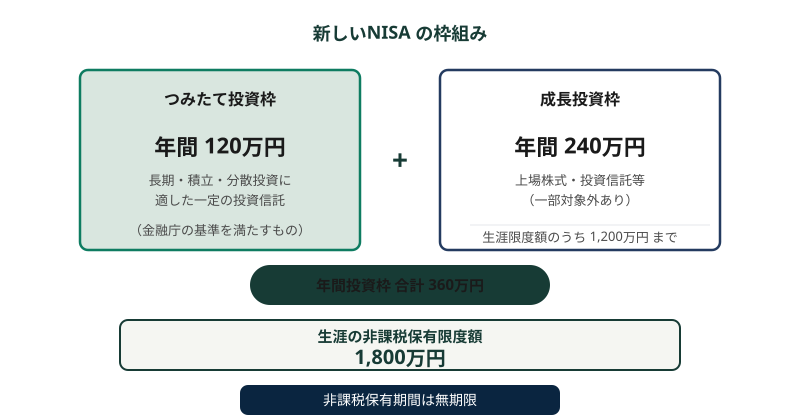

新しいNISA
このページで学ぶこと
- NISAとは何か
- 新しいNISAの2つの投資枠
- 年間投資枠と非課税保有限度額
- 非課税期間と枠の再利用
- NISAの注意点と今後の変更予定
NISAとは
NISA（少額投資非課税制度）は、投資から得られる利益（配当金・分配金・売却益）が非課税になる日本の税制優遇制度です。通常、投資の利益には約20%の税金がかかりますが、NISA口座で投資した分については、この税金がかかりません。
NISAは金融庁が所管する制度で、2024年1月から大幅に拡充された「新しいNISA」が開始されました。
2つの投資枠
新しいNISAには、「つみたて投資枠」と「成長投資枠」の2つの投資枠があります。これらは併用が可能です。
| 項目 | つみたて投資枠 | 成長投資枠 |
|---|---|---|
| 年間投資枠 | 120万円 | 240万円 |
| 対象商品 | 金融庁の基準を満たした投資信託・ETF | 上場株式・投資信託・ETF など（一部除外あり） |
| 購入方法 | 積立投資のみ | 一括購入・積立投資いずれも可 |
| 非課税期間 | 無期限 | 無期限 |
2つの枠を合わせた年間投資枠の合計は360万円です。
図：新しいNISAの枠組み

つみたて投資枠と成長投資枠の2つの枠で構成され、生涯の非課税保有限度額は1,800万円です
非課税保有限度額
新しいNISAでは、生涯を通じた非課税保有限度額（総枠）が1,800万円に設定されています。このうち、成長投資枠で使える上限は1,200万円です。
非課税保有限度額（生涯）: 1,800万円
うち成長投資枠の上限: 1,200万円
つみたて投資枠のみで1,800万円すべてを使うことも可能
非課税保有限度額は「簿価残高方式」で管理されます（取得価額ベース）。
簿価残高方式とは
非課税保有限度額の計算は、購入時の取得価額（簿価）で管理されます。つまり、保有している商品の現在の時価ではなく、いくらで買ったかが基準になります。
売却による枠の再利用
新しいNISAでは、保有している商品を売却すると、その商品の取得価額（簿価）分の非課税保有限度額が翌年以降に再利用できます。
ただし、年間投資枠（つみたて投資枠120万円、成長投資枠240万円）は翌年にならないとリセットされません。年の途中で売却しても、その年の年間投資枠は増えません。
枠の再利用の例
取得価額100万円の投資信託を売却した場合、翌年以降にその100万円分の非課税保有限度額が空きます。ただし、年間投資枠の範囲内でしか新たに投資できない点に注意が必要です。
対象年齢と口座開設
新しいNISA口座を開設できるのは、日本国内に住む18歳以上の個人です（その年の1月1日時点の年齢）。1人1口座のみ開設でき、金融機関は年単位で変更可能です。
将来の変更予定: 0〜17歳へのつみたて投資枠の開放
2027年1月より、0〜17歳の未成年者にもNISAのつみたて投資枠が開放される予定です。この変更は、本ページ最終確認時点（2026年11月7日）で公表されている情報に基づいています。制度の詳細や施行時期は変更される可能性があります。最新の情報は金融庁の公式サイトでご確認ください。
NISAの注意点
- NISA口座での損失は、他の口座（特定口座・一般口座）の利益と損益通算できない
- 損失の繰越控除（3年間）もNISA口座では利用できない
- 非課税のメリットがあるのは利益が出た場合のみ。損失が出た場合、通常の課税口座よりも税制上不利になる可能性がある
- つみたて投資枠で購入できるのは、金融庁の基準を満たした商品に限られる
- 金融機関によって取扱商品が異なる
- 制度は法令改正により変更される可能性がある
損益通算ができないことの意味
通常の課税口座では、ある銘柄の売却損を別の銘柄の売却益と相殺できます（損益通算）。しかしNISA口座で発生した損失は、課税口座の利益と相殺できません。つまり、NISA口座で損失が確定した場合、その損失を税制上活用できないことになります。
新しいNISAのまとめ
| 項目 | 内容 |
|---|---|
| 制度開始 | 2024年1月 |
| 年間投資枠（つみたて投資枠） | 120万円 |
| 年間投資枠（成長投資枠） | 240万円 |
| 年間投資枠（合計） | 360万円 |
| 非課税保有限度額（生涯） | 1,800万円（うち成長投資枠は1,200万円まで） |
| 非課税期間 | 無期限 |
| 口座開設可能年齢 | 18歳以上（1月1日時点） |
| 枠の再利用 | 売却した翌年以降に簿価分が復活 |
出典
- 金融庁「新しいNISA」
最終確認日: 2026年11月7日
よくある誤解
NISAは利益が非課税になる制度であり、投資元本を保証する制度ではありません。投資した商品が値下がりすれば損失が発生します。さらに、NISA口座の損失は損益通算ができないため、税制上のデメリットもあります。
成長投資枠の年間上限は240万円です。残りの120万円はつみたて投資枠として使うことができますが、成長投資枠で360万円すべてを使うことはできません。一方、つみたて投資枠のみで生涯の非課税保有限度額1,800万円を使い切ることは可能です。
売却による非課税保有限度額の復活は翌年以降です。また、年間投資枠（つみたて120万円+成長240万円）は年ごとに決まっており、年の途中で売却しても当年の年間投資枠は増えません。
理解度チェック
Q1. 新しいNISAの年間投資枠の合計はいくらですか?
Q2. 非課税保有限度額（生涯の総枠）はいくらですか?
Q3. NISA口座の損失についての注意点として正しいものはどれですか?